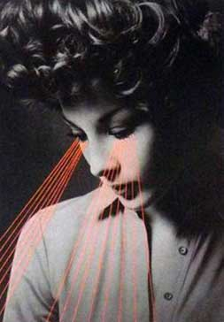

Un siglo de investigación de Imágenes: Reflexiones sobre las contribuciones de Cheves Perky a nuestro entendimiento de la Imaginería Mental
Revisamos la investigación científica contemporánea sobre la relación entre la percepción visual y las imágenes mentales visuales en el contexto del artículo de Cheves Perky (1910) sobre imágenes e imaginación. Este cuerpo de investigación ha establecido firmemente una fuerte conexión entre la psicología de la imagen y la percepción y ha contribuido con una fuerte voz al debate de imágenes. A continuación, utilizamos el concepto de encarnación para discutir otras vías de investigación a las que el trabajo de Perky insinuó. Estos incluyen un examen más profundo de la relación entre la imagen y la emoción, los aspectos creativos y activos de la imaginación y la imaginación y los métodos que podemos utilizar para entender la imaginación y la imaginación como una experiencia humana (Waller, Schweitzer, Brunton y Knudson, p 291, 2012).
Hace más de cien años que Cheves Perky publicó "Un estudio experimental de la imaginación" en el American Journal of Psychology (Perky, 1910). Aunque el trabajo de Perky fue especialmente creativo y generativo, y su artículo es un hito temprano en la comprensión científica de las imágenes mentales y su relación con Percepción y memoria. La conexión entre la percepción y las imágenes sigue siendo investigada y debatida por los científicos cognitivos de hoy, y el trabajo de Perky todavía se cita como fundacional a estos esfuerzos. Pero el artículo de Perky presagiaba otros desarrollos académicos modernos.
En nuestra comprensión de la imaginería y la imaginación y las ideas contenidas que aún no han sido plenamente apreciados o desarrollados por la ciencia psicológica mainstream. En este artículo, para reconocer la contribución y el impacto del artículo de Perky, revisamos y evaluamos el estado de la investigación científica sobre las imágenes mentales. Al final, habremos discutido las direcciones que el trabajo de Perky podría haber tomado casi tanto como habremos discutido el camino que tiene. Sin embargo, antes de examinar estas ideas merece la pena reflexionar sobre el papel de la imagen en la filosofía de la mente y en el medio intelectual de donde surgió la contribución de Perky, ya que incluso en 1910 la investigación psicológica de las imágenes no era sin contexto e historia (Waller, Schweitzer, Brunton y Knudson, p 291, 2012).
Filósofos desde al menos Aristóteles han invocado el concepto de una imagen en una variedad de maneras de desarrollar concepciones del pensamiento y el comportamiento humanos. Por ejemplo, Aristóteles (1907) afirmó que el comportamiento se produce cuando un juicio apetitivo-evasivo se aplica a una imagen (derivada de los sentidos), pero lo distingue de la imaginación pura, que no involucra tales juicios (libro 3, capítulos 7- 8). En el contexto de describir lo que consideraba un relato más natural de las emociones humanas, Spinoza (1677/1883) observó que las imágenes pueden afectar las emociones tanto como las percepciones (parte 3, prop. XVIII). Kant (1781/1922) sostuvo que los conceptos se representan como reglas para producir imágenes de esos conceptos y que el proceso de producir imágenes se facilita mediante la reproducción mental de objetos de experiencia (división 1, libro 1, capítulo 2, sección 2) (Waller, Schweitzer, Brunton y Knudson, p 292, 2012).
Después de la Ilustración y los primeros éxitos de la física, la química y la biología, los filósofos generalmente se interesaron cada vez más en los descubrimientos y enfoques analíticos de la ciencia, en el abandono práctico de las perspectivas más estética, humanista y deliberadamente racional que habían sido comunes Entre filósofos y teólogos anteriores. En combinación con los temas epistemológicos que han sido siempre una parte importante del discurso filosófico, este desarrollo preparó el escenario para el matrimonio interdisciplinario que dio origen al campo moderno de la psicología.
Como la niña de la ciencia y la filosofía, la psicología se encontraba en una posición única para llevar la tecnología moderna y la sabiduría antigua a las preguntas más fundamentales sobre la naturaleza humana, incluida la naturaleza de la imaginación. (Sin embargo, la psicología contemporánea parece haber identificado mucho más fuertemente con sólo uno de sus padres).
A medida que el campo de la psicología comenzó a examinar la experiencia humana como una ciencia empírica, la noción de la imagen figuraba centralmente en la disciplina. Para Wundt y Titchener, por ejemplo, determinar si el pensamiento podía ocurrir sin imágenes era un aspecto importante de un enfoque empírico de la psicología (véase Woodworth, 1915, para una revisión del debate sobre el pensamiento sin imagen). Los precursores de Perky ya habían ilustrado un vínculo potencialmente estrecho entre la percepción y las imágenes. En un artículo titulado "Medir alucinaciones", la Escritura (1896) informó de un experimento en el que, después de haber sido entrenado para varios ensayos para detectar un estímulo apenas supraliminal, los participantes posteriormente informó que estaba presente, incluso cuando no estaba allí (véase también Külpe, 1902). Aunque el valor probatorio de los experimentos de las escrituras hoy en día puede ser cuestionable, es claro que a finales del siglo XIX el campo de la psicología había adoptado la imagen como un fenómeno adecuado para la investigación científica (Waller, Schweitzer, Brunton y Knudson, p 292, 2012).
Relación entre imágenes y percepción
Los esfuerzos de Perky para explorar científicamente las imágenes eran multifacéticos, pero quizás su contribución más innovadora implicó invertir la demostración de la Escritura de la relación entre la imagen y la percepción. En lugar de mostrar que una imagen mental puede ser confundida con un percepto, Perky demostró que un percepto puede ser confundido con una imagen. Para ello, desarrolló un elaborado sistema de proyección que incluía su sala de laboratorio y un cuarto oscuro adyacente que estaba separado del laboratorio por una pared con una gran ventana.

Al cubrir la ventana con una pantalla de cartón y proyectar colores a través de una plantilla en la pantalla desde el cuarto oscuro, Perky podría producir parches de diferentes formas en seis colores diferentes en la pared del laboratorio sin un sistema de proyección aparente. Las pruebas piloto de luminancia permitieron a Perky y a sus asistentes proyectar estos colores a un nivel tenue pero perceptible en la pared del laboratorio. Posteriormente, los participantes individuales fueron llevados al laboratorio y se les pidió que formaran y describieran imágenes mentales de varios objetos comunes (por ejemplo, tomate, plátano, hoja o naranja) mientras que la forma y el color correspondientes del objeto con imágenes se proyectaban sobre la pared antes de ellos, Inicialmente a una luminancia subliminal, pero aumentando gradualmente hasta estar muy por encima del umbral (Waller, Schweitzer, Brunton y Knudson, p 292, 2012).
Sin excepción, los 24 participantes en el experimento principal de Perky no percibieron conscientemente los parches de color, sino más bien los confundieron con su propia imaginación. Perky escribió: "Al final de la serie, después de haber grabado todas las introspecciones, se le preguntó al observador si estaba" completamente seguro de haber imaginado todas estas cosas. "La pregunta casi siempre despertaba sorpresa y a veces indignación" (Página 431).
Estos resultados provocativos pueden ir en contra de nuestra experiencia: Excepto en situaciones muy inusuales o artificiales, las personas son fácilmente capaces de distinguir un percepto (derivado de información sensorial aferente inmediata) de una imagen (derivada de información interna o almacenada). Sin embargo, el hecho de que la información sensorial subliminal puede ser confundida con una imagen mental, parece sugerir que la percepción y la imaginación se basan en los mismos sistemas mentales, procesos o recursos. Quizás debido a esto, los investigadores contemporáneos han vinculado la imaginación y la percepción muy de cerca-de hecho, comúnmente usando la palabra percepción en su definición de la imagen (Waller, Schweitzer, Brunton y Knudson, p 293, 2012).
Por lo tanto, para Wraga y Kosslyn (2003), una imagen es "una representación interna que produce la experiencia de la percepción en ausencia de la entrada sensorial apropiada" (p 466). Ishai y Sagi (1995) definieron la imagen visual como "la invención o la recreación de una experiencia perceptual en ausencia de la entrada de la retina" (página 1772). Del mismo modo, Finke (1989) definió la imagen como "la invención mental o recreación de una experiencia que en al menos algunos aspectos se asemeja a la experiencia de percibir realmente. . . Ya sea en conjunción con, o en ausencia de, la estimulación sensorial directa "(p.2). Reflejaremos más adelante en este artículo sobre las implicaciones de definir imágenes como una experiencia, como ilustran estos y otros ejemplos. Para los propósitos presentes, basta con notar que para muchos psicólogos contemporáneos, la imagen -por definición- comparte un estrecho vínculo con la percepción. Comprender la fuerza, la naturaleza y los límites de este vínculo ha ocupado gran parte de la investigación contemporánea sobre la imaginación mental.
Durante la era del conductismo en la primera mitad del siglo XX, prácticamente no se realizó ningún trabajo de seguimiento sobre la demostración de Perky (véase Penfield y Jasper, 1954, o Short, 1953, para investigación relevante sobre imágenes en la década de 1950). En la década de 1960, los psicólogos habían comenzado a aplicar métodos científicos al estudio de la imagen, y varios comenzaron a reexaminar las ideas de Perky y sus implicaciones. El trabajo seminal sobre la imagen en esta era vino de Allan Paivio (1971), Donald Hebb (1968), y Roger Shepard (por ejemplo, Shepard y Chipman, 1970), que colectivamente restaurado imágenes como un tema de investigación psicológica (para una cuenta contemporánea de El retorno de la imagen a la psicología, véase Holt, 1964, para cuentas retrospectivas, véase también Paivio, 1971, Shepard & Cooper, 1982) (Waller, Schweitzer, Brunton y Knudson, p 293, 2012).
Segal replicó esencialmente el principal hallazgo de Perky utilizando técnicas de detección de señales para demostrar que el umbral de detección para estímulos visuales era mayor durante una tarea simultánea de obtención de imágenes (Segal & Fusella, 1969, Segal & Gordon, 1969). Segal y Fusella (1970) demostraron una evidencia particularmente impresionante, que demostró que las imágenes visuales y auditivas tienen efectos selectivos sobre la detección de una percepción consistente en la modalidad y no sobre el percepto intermodal (véase también Reeves, 1981, para hallazgos análogos con imágenes discriminación). Basándose principalmente en este trabajo, la percepción original de Perky se ha identificado principalmente con la idea de que la detección perceptiva o la discriminación son interferidas por las tareas de imágenes simultáneas, un hallazgo que ahora se llama el efecto Perky (Waller, Schweitzer, Brunton y Knudson, 2012).
La consideración del efecto Perky como interferencia entre la imagen y la percepción ha llevado a un cuerpo sustancial de investigación que examina las características de procesamiento de las imágenes y la percepción y, además, donde en el flujo de procesamiento (por ejemplo, óptica, sensación, percepción, atención y respuesta) Los fenómenos pueden superponerse. Sin embargo, incluso si se admite que hay lazos estrechos entre la percepción y las imágenes, no está claro a priori si uno esperaría el efecto Perky. En algunos casos (p. Ej., Finke, 1980, Kosslyn, 1980), si la percepción y las imágenes comparten un medio representacional común, entonces las imágenes pueden facilitar la percepción activando o cebando este medio común. De hecho, y aparentemente en contradicción con los hallazgos citados anteriormente, tales efectos de facilitación han sido demostrados por Farah (1985, 1989), a cuyos participantes se les pidió que imaginaran la letra T o H en el mismo lugar donde estas letras (u otros estímulos) Fueron presentados posteriormente.
Los participantes de Farah reconocieron correctamente estos estímulos de manera más eficiente cuando también fueron imaginados (véase también Ishai y Sagi, 1995, 1997b, Pearson, Clifford y Tong, 2008). En investigaciones relacionadas, se ha demostrado que imaginar el contexto de un objeto o evento puede facilitar su percepción (Peterson y Graham, 1974) y que las imágenes pueden efectivamente dar a conocer el reconocimiento de palabras o imágenes (Michelon y Koenig, 2002, Pilotti, Gallo, Roediger, 2000) (Waller, Schweitzer, Brunton y Knudson, p 293, 2012).
Sin embargo, un importante cuerpo de trabajo empírico que implica tareas de percepción y de imágenes simultáneas también ha demostrado un fuerte efecto de interferencia entre los dos procesos. Además de los trabajos de Segal y colegas citados anteriormente, Craver-Lemley y Reeves han demostrado repetidamente que las tareas de imágenes simultáneas pueden reducir el rendimiento en las tareas perceptivas. Este robusto efecto de interferencia ocurre a pesar de las manipulaciones de la complejidad de la figura imaginada (Reeves, 1981, pero véase Craver-Lemley y Arterberry, 2001), las características ópticas de los estímulos percibidos (CraverLemley & Reeves, 1987) y la percepción (Craver-Lemley y Reeves, 1987). Este trabajo también ha ayudado a descartar un relato del efecto Perky como implicando únicamente cambios atencionales impuestos a la percepción por imágenes (Craver-Lemley & Reeves, 1992; Thompson, Hsiao, & Kosslyn, 2011).
Esta interferencia entre la percepción y las imágenes ha sido interpretada como reflejando el hecho de que las dos funciones psicológicas se basan en los mismos procesos sensoriales de bajo nivel. En estos casos, se cree que la imagen reduce la sensibilidad del sistema visual al reducir la energía disponible de los estímulos perceptivos (Craver-Lemley y Reeves, 1992) y para alinearse con la percepción al nivel del procesamiento visual en el que se combinan las características visuales Craver-Lemley, Arterberry, & Reeves, 1999) (Waller, Schweitzer, Brunton y Knudson, p 294, 2012).
Ishai y Sagi (1997a) sugirieron que la interferencia es más probable cuando las imágenes se basan en la memoria a largo plazo, y la facilitación es más probable cuando las imágenes se basan en la memoria de trabajo a corto plazo ; Sin embargo, la relación es probablemente más complicada que esto. La dirección de la influencia también parece depender de las similitudes entre el contenido de la imagen y el percepto (Rebotier, Kirsh y McDonough, 2003), su localización y orientación espacial relativa (Craver-Lemley & Arterberry, 2001) y la naturaleza “De la tarea de percepción” (es decir, detección vs. identificación, ver Finke, 1986) (Waller, Schweitzer, Brunton y Knudson, p 294, 2012).
Bibliografía
Waller, D., Schweitzer, J., Brunton, J., & Knudson, R. (2012). A Century of Imagery Research: Reflections on Cheves Perky's Contribution to Our Understanding of Mental Imagery.”The American Journal of Psychology”, 125(3), 291-305.
Referentes
Anderson, J. R. (1976). Language, memory, & thought. Hillsdale, NJ: Erlbaum. Aristotle (1907). De Anima, with translation, introduction and notes (R. D. Hicks, Trans.). Retrieved from http://www.archive.org
Barsalou, L. W. (1999). Perceptual symbol systems. Behavioral and Brain Sciences, 22, 577–660.
Barsalou, L. W. (2008). Grounded cognition. Annual Review of Psychology, 59, 617–645.
Barsalou, L. W. (2009). Simulation, situated conceptualization, and prediction. Philosophical Transactions of the Royal Society of London: Biological Sciences, 364, 1281–1289.
Bartolomeo, P. (2002). The relationship between visual perception and visual mental imagery: A reappraisal of the neuropsychological evidence. Cortex, 38, 357–378.
Behrmann, M., Winocur, G., Moscovitch, M. (1992). Dissociation between mental imagery and object recognition in a brain-damaged patient. Nature, 359, 636–637. Bisiach, E., Luzzatti, C. (1978). Unilateral neglect of representational space. Cortex, 14, 129–133.
Borst, G., Kosslyn, S. M. (2008). Visual mental imagery and visual perception: Structural equivalence revealed by scanning processes. Memory & Cognition, 36, 849–862.
Bourlon, C., Oliviero, B., Wattiez, N., Pouget, P., Bartolomeo, P. (2011). Visual mental imagery: What the head's eye tells the mind's eye. Brain Research, 1367, 287–297.
Bourlon, C., Pradat-Diehl, P., Duret, C., Azouvi, P., Bartolomeo, P. (2008). Seeing and imagining the “same” objects in unilateral neglect. Neuropsychologia, 46, 2602–2606.
Brooks, R. (1999). Cambrian intelligence: The early history of the new AI. Cambridge, MA: MIT Press.
Carrasco, M., Ridout, J. B. (1993). Olfactory perception and olfactory imagery: A multidimensional analysis. Journal of Experimental Psychology: Human Perception and Performance, 19, 287–301.
Casey, E. S. (1976). Imagining: A phenomenological study. Bloomington: Indiana University Press.
Craver-Lemley, C., Arterberry, M. E. (2001). Imagery-induced interference on a visual detection task. Spatial Vision, 14, 101–119.
Craver-Lemley, C., Arterberry, M. E., Reeves, A. (1999). “Illusory” illusory conjunctions: The conjoining of features of visual and imagined stimuli. Journal of Experimental Psychology: Human Perception and Performance, 25, 1036–1049.
Craver-Lemley, C., Reeves, A. (1987). Visual imagery selectively reduces vernier acuity. Perception, 16, 599–614
Craver-Lemley, C., Reeves, A. (1992). How visual imagery interferes with vision. Psychological Review, 99, 633–649.
Damasio, A. (1994). Descartes' error: Emotion, reason, and the human brain. New York, NY: G.P. Putnam.
Damasio, A. (1999). The feeling of what happens: Body and emotion in the making of consciousness. New York, NY: Harcourt Brace.
Damasio, A. (2003). Looking for Spinoza: Joy, sorrow, and the feeling brain. Orlando, FL: Harcourt.
Decety, J. (1996). The neurophysiological basis of motor imagery. Behavioural Brain Research, 77, 45–52.
Decety, J., Jeannerod, M. (1995). Mentally simulated movements in virtual reality: Does Fitt's law hold in motor imagery? Behavioural Brain Research, 72, 127–134.
Denis, M., Borst, G. (2006). Variations on the image scanning paradigm: What do they contribute to our knowledge of mental imagery? In T. Vecchi & G. Bottini (Eds.), Imagery and spatial cognition (pp. 49–68). Amsterdam, The Netherlands: John Benjamins.
Denis, M., Cocude, M. (1997). On the metric properties of visual images generated from verbal descriptions: Evidence for the robustness of the mental scanning effect. European Journal of Cognitive Psychology, 9, 353–379.
Dennett, D. (1991). Consciousness explained. Boston, MA: Little, Brown.
Djordjevic, J., Zatorre, R. J., Petrides, M., Jones-Gotman, M. (2004). The mind's nose: Effects of odor and visual imagery on odor detection. Psychological Science, 15, 143–148.
Farah, M. J. (1984). The neurological basis of mental imagery: A componential analysis. Cognition, 18, 245–272.
Farah, M. J. (1985). Psychophysical evidence for a shared representational medium for visual images and percepts. Journal of Experimental Psychology: General, 114, 93–105.
Farah, M. J. (1989). Mechanisms of imagery-perception interaction. Journal of Experimental Psychology: Human Perception and Performance, 15, 203–211.